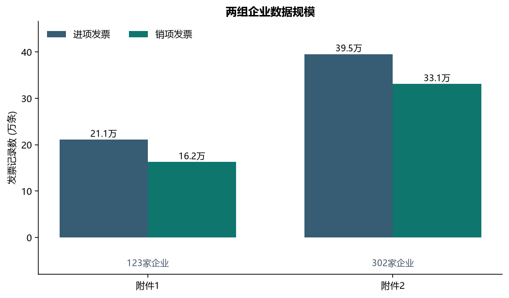
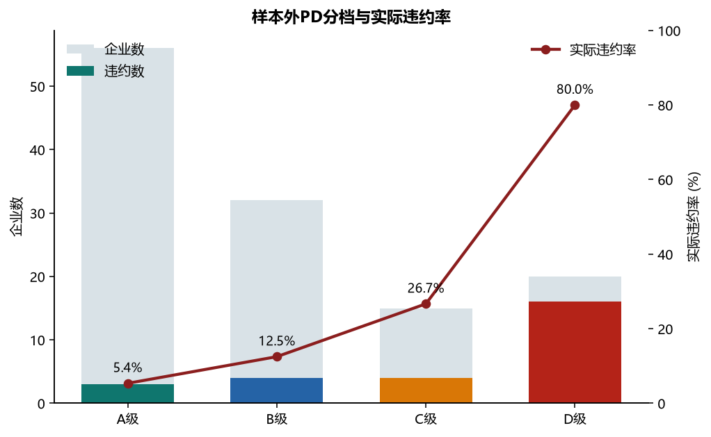
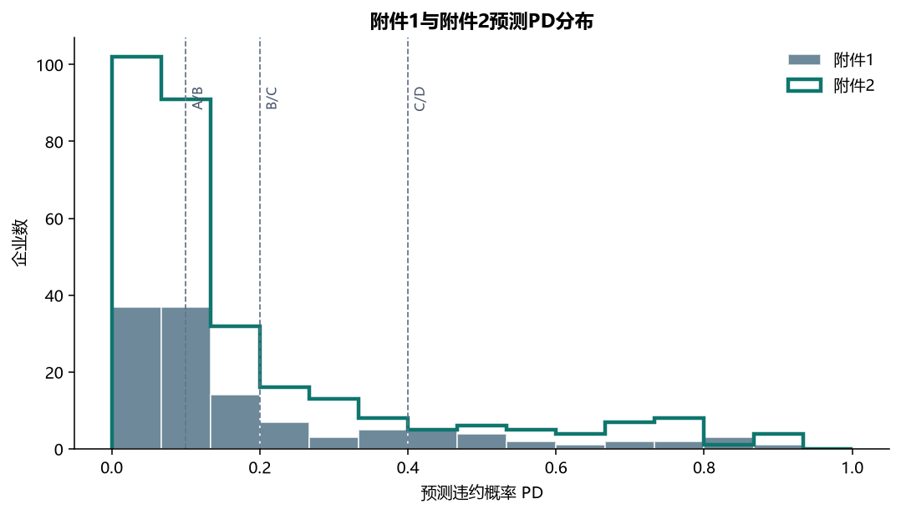
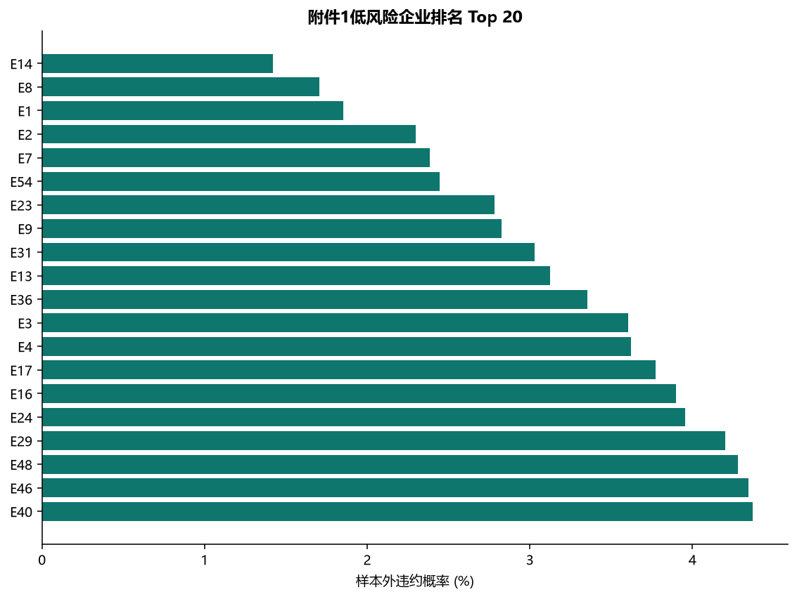
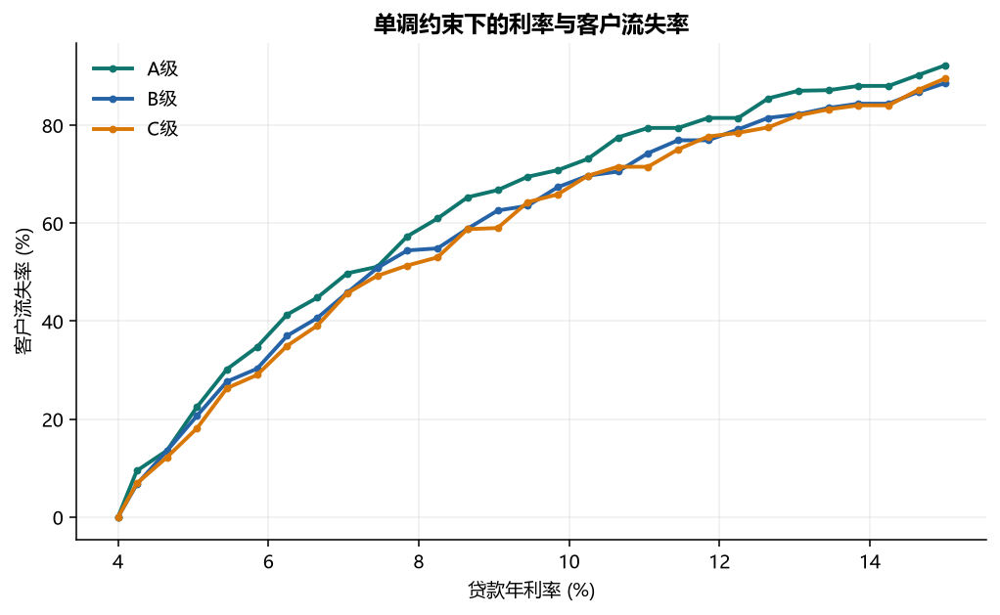
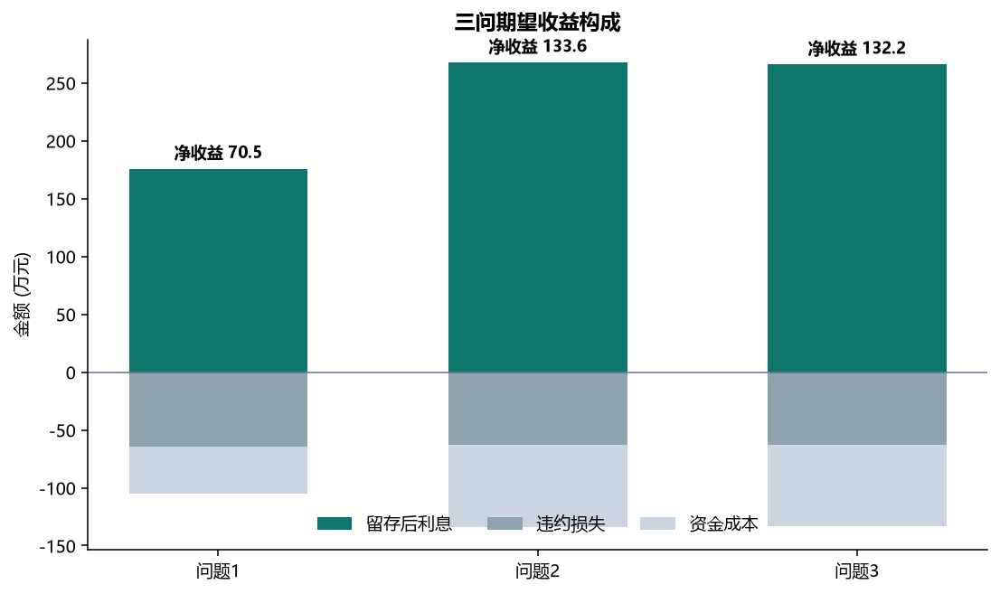
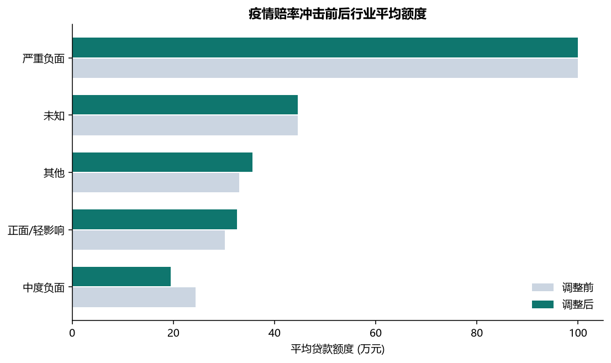
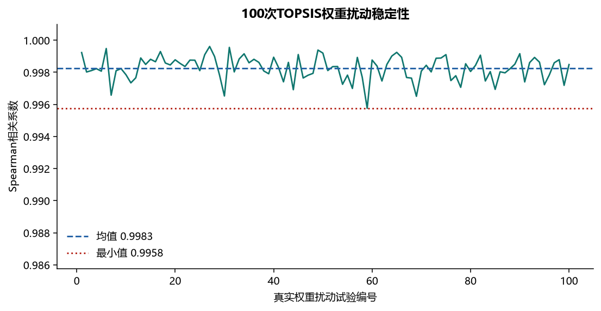
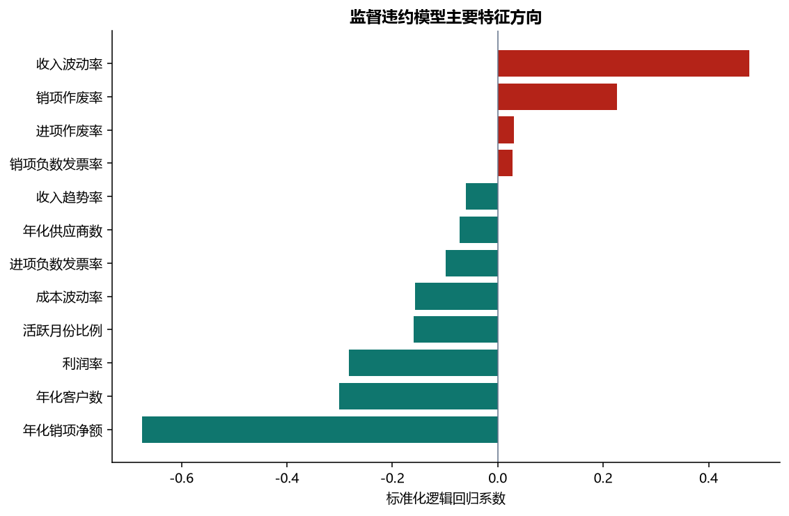

规模与盈利
年化收入、年化利润、利润率、客户数和供应商数。
沿着数据处理、违约预测、利率定价和额度优化，理解银行如何把历史交易转化为可执行的信贷策略。
发票记录很多，但监督样本只有123家。数据处理的重点不是堆指标，而是保留退货、作废和经营断档的真实经济含义。

年化收入、年化利润、利润率、客户数和供应商数。
收入和成本波动、收入趋势，识别剧烈变化与持续收缩。
活跃月份比例和最近断档月数，区分持续经营与偶发交易。
进销项作废、负数发票和负数金额比例。
逻辑回归输出一年期违约概率PD。所有效果指标来自重复嵌套样本外预测，不用训练内成绩证明自己。


| 等级 | 企业数 | 违约数 | 实际违约率 | 平均PD |
|---|---|---|---|---|
| A级 | 56 | 3 | 5.4% | 5.6% |
| B级 | 32 | 4 | 12.5% | 13.6% |
| C级 | 15 | 4 | 26.7% | 28.8% |
| D级 | 20 | 16 | 80.0% | 61.1% |
PD回答会不会违约，TOPSIS回答企业离理想经营状态有多近。两者互补，但用途不同。

高利率增加单笔利息，也提高客户流失。保序回归先得到随利率非降的流失率，再计算每个利率的期望收益。


若PD为8%，利率10%，流失率20%，LGD为60%，资金成本为2.5%，则单位额度期望收益为1.52%，100万元名义授信的期望净收益约1.52万元。
MILP把每家企业的单位收益放进同一个预算池，同时执行D级禁贷、单户上下限和总预算约束。
| 方案 | 放贷企业 | 额度合计 | 平均利率 | 留存后利息 | 违约损失 | 资金成本 | 期望净收益 |
|---|---|---|---|---|---|---|---|
| 问题1 | 80 | 8000 | 12.31% | 175.58 | 64.08 | 40.96 | 70.54 |
| 问题2 | 100 | 10000 | 10.28% | 267.38 | 63.00 | 70.82 | 133.56 |
| 问题3 | 100 | 10000 | 10.35% | 265.73 | 63.22 | 70.31 | 132.19 |
行业冲击乘到违约赔率上，得到新PD后重新评级、重新选择利率并重新分配额度。共有8家企业跨越等级阈值。

| 行业类别 | 企业数 | 原额度 | 新额度 | 原PD | 新PD |
|---|---|---|---|---|---|
| 严重负面 | 3 | 100.0 | 100.0 | 4.2% | 5.4% |
| 中度负面 | 82 | 24.4 | 19.5 | 18.6% | 20.3% |
| 其他 | 118 | 33.1 | 35.6 | 18.0% | 18.0% |
| 未知 | 56 | 44.6 | 44.6 | 16.2% | 16.2% |
| 正面/轻影响 | 43 | 30.2 | 32.6 | 20.3% | 19.1% |
赔率没有1的上界，乘以冲击系数后再还原为概率，可以保证新PD始终位于0和1之间。脱敏名称无法识别行业的企业标为未知，不强行分类。
100次权重扰动都真实重算TOPSIS得分和排名。排名稳定说明小幅权重误差影响有限，但不能替代更大样本和跨年度验证。


以下参数可以在配置文件中替换。修改后应重新运行完整流水线，而不是只改论文或网页数字。
| 参数 | 当前值 | 性质 |
|---|---|---|
| 问题1预算 | 8000万元 | 可配置情景 |
| 问题2和3预算 | 10000万元 | 题目约束 |
| LGD | 60.0% | 业务假设 |
| 资金成本 | 2.5% | 业务假设 |
| 单户额度 | 10-100万元 | 题目约束 |